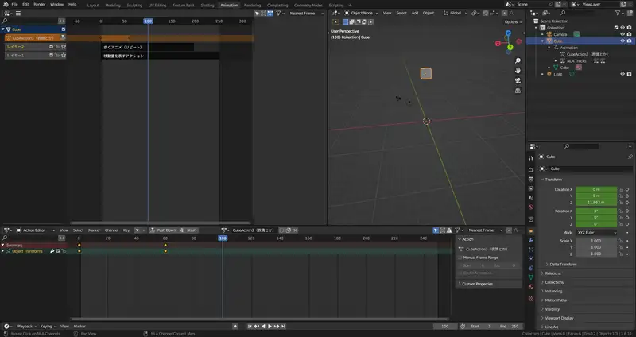
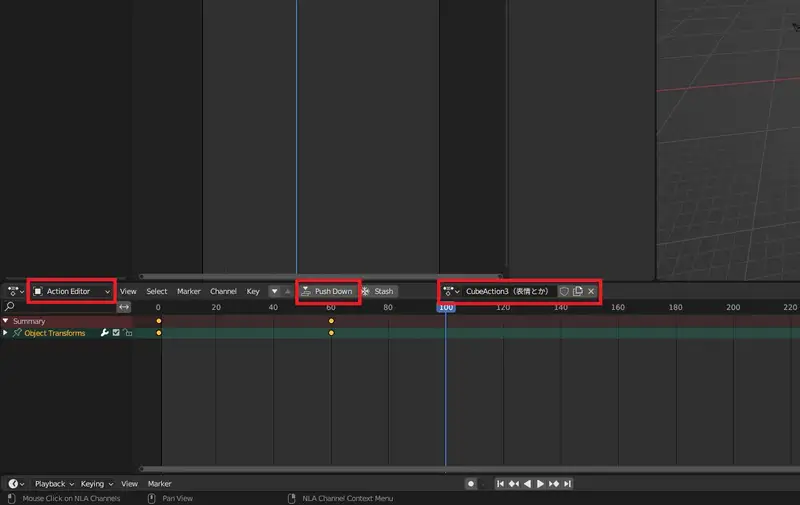
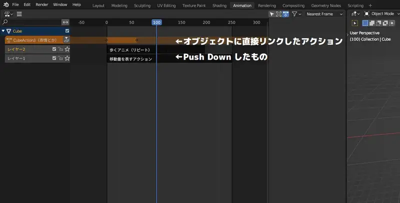
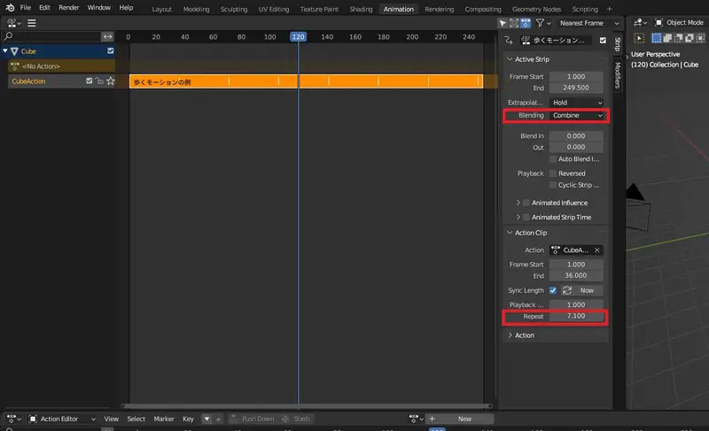

歩くアニメーションと移動量のアニメーションを混在させたくない！
歩くアニメーションと移動のアニメーションは別に作って合成するのが賢いやり方でしょう。 ゲームではプレイヤーの入力に対して動かなければいけませんから、歩くアニメーションと移動量は当然別に決められています。 今回はBlender上でアニメーションを作ることを想定していますが、それでも同じです。この合成に、NLAを使うわけです。
しかしながらその機能の使い方が難しいので、私はかなり困りました。この記事ではBlenderのNLA機能を使う上で知っておくと理解の助けになることを紹介します。
なお、アニメーションに活用しないモデリング中でのポーズの操作はこちらの記事で解説しています。
NLAとアクションの仕様
使用する前に、知っておかなければまずい知識がいくつかあります。
アクション
中身はキーフレームの情報で、アニメーションタブ内での操作だけでなく、最初の画面で直接キーフレームを打った時もアクションデータが生成されています。 データブロックの一種ですので、今後はアクションデータとも呼んでいきます。
最も重要な常識として、アクションデータはオブジェクトに対してひとつだけ紐づけられるものです。
NLA
上記の常識から外れ、オブジェクトに複数のアクションを紐づける仕組みです。これ自体も、自動的にオブジェクトに紐づけられています。
また、ややこしいことにひとつのオブジェクトに、直接紐づけたアクションとNLAを介したものとを両方紐づけることもできます。
{kind=link}
画面のみかた
実際に、歩くアニメーションと移動量のアニメーションをNLAで合成したときのAnimationタブの画面です。左上はNLAエディターに変更しています。
特に、ドープシート画面の挙動は初手では理解しにくいです。
{kind=link}

ドープシート
画面下のタイムラインです。モードをDope SheetからAction Editorに切り替えると、キーフレームを打った時に生成されたCubeActionとかArmatureActionといった名前がついているのがわかります。 ここに表示されるのは、オブジェクトにNLAを介さずオブジェクトに直接紐づけられたアクションです。
Push Downというボタンを押すとこのアクションがNLAに移動し、アクションエディターは再び空に戻ります。
空に戻った後、再びキーフレームを打つと、今度は新しいアクションがNLAを介さずオブジェクトに直接紐づけられます。
{kind=link}

NLAエディター
NLAは初期状態では表示されませんので画面を切り替えておきます。
黒い帯が先ほどNLAに移動したアクションであり、これをストリップと呼びます。 Push Downするたびに新しいレイヤーが作られ、上下に重なっている部分は上のものが優先されます。サイドバーにあるBlendingをReplaceからAdd（Combine）に変更すると、合成されます。 サイドバーのRepeatの数字を増やすとリピート再生されます。
NLAの一番上にあるオレンジの少し薄くなったレイヤーは、オブジェクトに直接紐づけられたアクションを表しています。レイヤー名の部分をクリックすると、これもまたBlendingを変更できます。 直接紐づけたアクションとNLAを介したものとを両方紐づけることもできますが、わかりやすさを重視するなら常にすべてのアクションをNLAに入れておいた方がいいかもしれません。
なお、ストリップの名前と、それに紐づけられているアクションデータの名前は一致していませんので注意してください。
{kind=link}

{kind=link}

ストリップの操作
編集
ストリップを選択し、Tabキーを押すとそのストリップに紐づけられたアクションを編集できます。編集中はアクションエディターにそのアクションが表示され、元あったアクションは一時的に適用されなくなります。 これが迷惑なら、元あったアクションもいったんPush Downするとよいでしょう。（Tabキーを使わずPush Downボタンの横にある上下ボタンをクリックすると適用されたまま編集できるようです。）
複製
ストリップもオブジェクトと同様に、Shift + Dで複製、Alt + Dでリンク複製できます。Shift + Dならアクションデータも複製され、Alt + Dなら元のアクションデータを共有します。
移動
ドラッグかGキーで移動できます。また、G Y と押せば垂直移動もできます。
フェイクユーザーとは
Blenderは紐づけのないデータブロックをセーブファイルに保存しません。
アクションデータを整理する過程でNLAにもオブジェクトにも紐づけず、そのまま忘れてしまうとアクションデータが消えてしまいます。 フェイクユーザーをオンにしておくと紐づけのないデータブロックも保存されますので、使いまわしのきく重要なアクションにはフェイクユーザーをオンにしておくと安心です。
×ボタンは「削除」ではない
アクションエディターで、アクション名の横にある×ボタンを押すとアクションデータも消えてしまいそうな印象を受けますが、これは紐づけを解除するだけであって「削除」ではありません。
例えば、アニメーションの案を二つ作って見比べたいときは、一度作ったアクションをフェイクユーザーをオンにしてから×で消し、もう一つのアクションを作れば良いです。 最初の案に戻すこともできますし、没案はフェイクユーザーをオフにしておけば勝手に消えます。
オブジェクトを複製するとアクションも複製される？
オブジェクトに直接紐づけられたアクションは、オブジェクトを複製すると同時に複製され、.001と番号を付けて分けられます。フェイクユーザーは必ずオフの状態になります。
NLAを介したアクションは複製されず、同じアクションデータを共有しています。共有したくないときは、ストリップもShift + Dで複製するとアクションデータが複製されます。